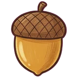
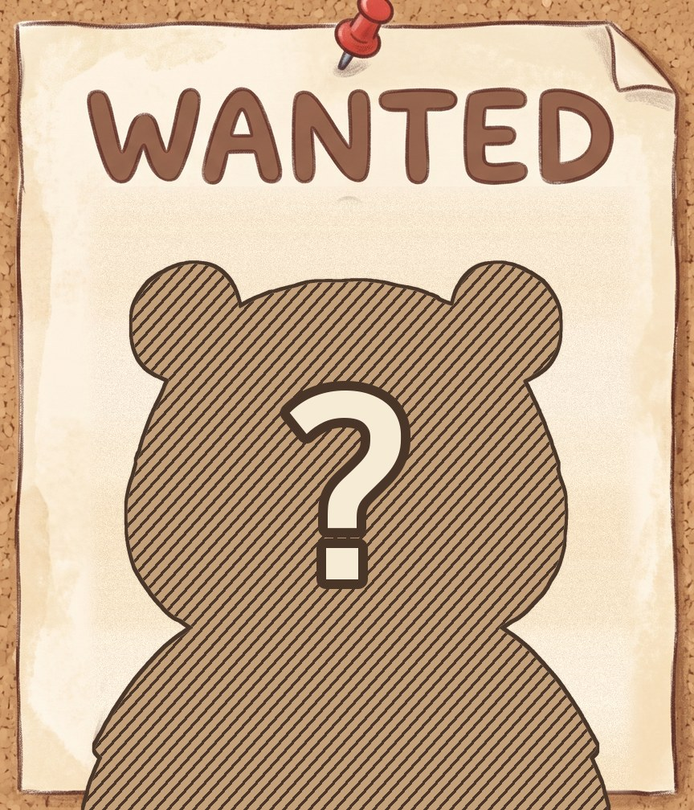

지금
사건 목록

2 Case 01사라진 연
Case 01사라진 연 Case 02주인 없는 우산
Case 02주인 없는 우산 홈
홈 사건학습마이
사건학습마이한 화면에 사건 1–2개. 사건 8개 + 미니게임을 보려면 길게 내려야 하고, 어디까지 했는지 한눈에 안 보여요.
A · 숲길 따라가기
사건 목록2


🔒
04🔒
05Case 03 · 생김새·옷차림 듣기꿀 가게 강도
시작
홈사건학습마이
사건학습마이좋음: 어디까지 왔고 다음이 무엇인지 바로 보여요. 미니게임이 길가의 작은 상자로 자연스럽게 끼어요. 아래에 지금 사건 카드.
아쉬움: 사건 제목은 동그라미를 눌러야 보여요. 숲길 배경 그림을 새로 그리면 더 예뻐요(약 1.5크레딧).
B · 두 줄 사진 판
사건 목록2
SOLVEDCase 01사라진 연SOLVEDCase 02주인 없는 우산새로운 의뢰!Case 03꿀 가게 강도
🔒
Case 04 철자 자물쇠 · Case 03 해결하면🔒
Case 05 🔒
Case 06 홈사건학습마이
사건학습마이좋음: 지금 코르크판·사진 느낌 그대로, 한 화면에 사건 6개. 미니게임은 사진 줄 사이 가로 띠.
아쉬움: 사진이 작아져 그림이 덜 보이고 제목이 2줄로 접혀요.
C · 한 장씩 넘기기
사건 목록2
Case 02주인 없는 우산Case 03꿀 가게 강도생김새·옷차림 듣기사건 시작
Case 04
‹›
홈사건학습마이
사건학습마이좋음: 다음 사건이 크게, 바로 시작. 아래 점으로 진행(초록 해결, 노랑 지금, 갈색 마름모 미니게임).
아쉬움: 다른 사건은 옆으로 넘겨야 보여요.
D · 사건 파일 목록
사건 목록2
Case 01사라진 연생김새 듣기
해결 ★★★Case 02주인 없는 우산누구의 것인지 듣기
해결 ★★Case 03꿀 가게 강도생김새·옷차림 듣기
새 사건철자 자물쇠Case 03 해결하면 열려요
🔒
Case 04누가 화단을 망쳤을까?과거 의문문·부정 듣기
잠김🔒
Case 05바뀐 소풍 가방소유 표현 듣기
잠김🔒
Case 06사라진 음악 대회 바이올린위치 표현 듣기
잠김단어 짝맞추기Case 06 해결하면 열려요
홈사건학습마이
사건학습마이좋음: 사건 8개를 거의 한 화면에. 제목·배울 표현·별점이 다 보여요.
아쉬움: 가장 깔끔하지만 놀이 느낌이 덜해요(코르크판 느낌이 사라짐).
E · 사건 숲길 (지금 사건 8개 그대로)
사건 목록7
미니게임
NEW열린 것만
NEW03 꿀 가게 강도
🔒
04 누가 화단을 망쳤을까?🔒
05 바뀐 소풍 가방Case 03 · 생김새·옷차림 듣기꿀 가게 강도
시작
홈사건학습마이
사건학습마이챕터 없이 지금 사건 목록 순서 그대로(Case 01 → 08) 숲길 하나. 아래에서 위로 올라가고, 열면 지금 할 사건(03)이 가운데 오게 맞춰요. 위로 밀면 06 바이올린 → 단어 짝맞추기 → 07 도서관 → 08 크리스마스가 이어져요(사건이 늘면 길도 계속 위로).
맨 위 미니게임 줄(③): 열린 미니게임만, 누르면 바로 시작.
참고: 배경은 마을 지도로 대신(숲길 그림을 새로 그리면 이어 붙일 수 있게 세로로 길게, 약 1.5크레딧).